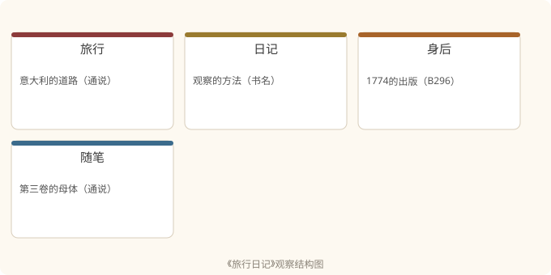

旅行日记
一、基本信息
| 作者 | 蒙田 |
|---|---|
| 成书/出版 | 1774年出版（Britannica B296：Journal de voyage published 1774——写于1580-81说待核） Michel de Montaigne — Encyclopaedia Britannica（百科全书） |
| 国别/地区 | 法国 |
| 时代 | 近代 · 16世纪（身后1774出版） |
| 体裁 | 日记 |
| 语言 | 法语 |

《旅行日记》观察结构图（主题·结构图）
二、创作背景
Britannica（B296）：旅行日记——'Journal de voyage published 1774'（1774年出版）。
Britannica（B296）：蒙田——《随笔集》作者（作者页交叉）。
题材（通说待核）：1580-81年意大利之行——从巴黎经瑞士到罗马的日记（由秘书记录+亲笔后半）。
三、内容脉络
（通说待核）瑞士与意大利的观察：温泉、客栈与罗马。
（通说待核）'罗马公民'荣誉与《随笔》的增订。
四、主要人物表
| 人物 | 身份 | 说明 |
|---|---|---|
| 蒙田 | 旅行者 | （B296 语境） |
五、主题与艺术特点
- '观察自己'的旅行（通说待核）。
- 身后1774年的出版（B296）。
- 《随笔》第三卷的母体（通说待核）。
六、影响与评论
- Britannica：Journal de voyage published 1774（B296）。
Michel de Montaigne — Encyclopaedia Britannica（百科全书） - Britannica：《随笔集》为代表作（B296 交叉）。
Michel de Montaigne — Encyclopaedia Britannica（百科全书）
七、阅读建议
难点
- 日记的两手笔（秘书/亲笔——通说待核）。
- 16世纪意大利地理。
- 《蒙田意大利之旅》中译名（《旅行日记》）待核。
- 法文原版（公有领域）。
蒙田侧写；与《随笔集》对读。
八、待核实
- 写作年份（1580-81说）与出版年（1774——B296）双口径核对。
- '罗马公民'细节待核。
- 秘书记录比例待核。